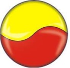

ХИРУРГИЧЕСКИЙ КЛЕЙ-ГЕРМЕТИК ЧЕЛОВЕЧЕСКОГО ПРОИСХОЖДЕНИЯ
Прямая угроза жизни при острых кровотечениях требует быстрых организационных, диагностических и лечебных мер, направленных в первую очередь на остановку кровотечения, предупреждение геморрагического шока и восполнение кровопотери. Фирмой ООО «ПЛАЗМА-ФТК» разработана технология отечественного производства вирусинактивированного фибринтромбинового клея (ФТК) «КРИОФИТ» из плазмы одного донора , которая внедрена в серийное производство, получено регистрационное удостоверение и сертификат СТ-1 о происхождении товара. В 2018-2020 гг сделано около 2000 операций с применением клея «Криофит» в различных областях хирургии.
Примеры применения фибринового клея:
- Стоматология. Показана целесообразность применения препаратов фибрина для ускорения, как регенерации костных тканей, так и приживления имплантатов Немаловажным фактором является формирование фибриновой пленки под слизисто-надкостничным лоскутом, что позволяет избежать кровотечений, формирования гематом и обеспечить плотное прилегание лоскута к поверхности кости. Кроме того показано применение при хроническом генерализованном катальном гингивите и парадонтите.
- Отолорингология. Двусторонняя тонзилэктомия - ускоряет заживление ран путем формирования новых кровеносных сосудов и локальном росте ткани, передняя тампонада носа
- Ортопедия. Фирма «Малти –Системс Технолоджи» разработала методику хондропластики с помощью Chondro-Gide® – коллагеновой мембраны для пластики дефектов хряща Фибриновый клей «Криофит» наносится непосредственно на субхондральную кость вокруг перфорационных отверстий. Chondro-Gide помещается на область дефекта пористой стороной и приклеивается. Для восстановления дефектов гиалинового хряща в зону дефекта хрящевой ткани вводят смесь клеток стромальной сосудистой фракции (ссф) одновременно с фибриновым клеем
- Гинекология. Использование фибринового клея для бесшовного соединения тканей исключает их травматизацию и ишемию в области шовного узла; обеспечивает, кроме склеивающего, гемостатический и герметизирующий шовную линию эффект.. Особенно целесообразно применять фибриновый клей в гинекологии при повторных или/и комбинированных оперативных вмешательствах. Применение фибринового клея при реконструктивно-пластических операциях на маточных трубах, при реконструктивно-пластических операциях на матке и яичниках.
- Кардиология. Применение биологического клея существенно помогает выполнению герметичных анастомозов на аорте, особенно при остром расслоении. Фибриновый клей хорошо подойдет для облитерации «сердечного» конца расслоенного пространства, тем самым предупреждая кровотечение из этого неудобного места. Применение биологического клея существенно помогает выполнению герметичных анастомозов на аорте, особенно при остром расслоении. В Клиническом центре ММА им. И. М. Сеченова Клей применялся у 5 больных для герметизации швов и уменьшения кровотечения операционного поля при операции АКШ, имплантации искусственных протезов клапанов сердца и операциях на крупных сосудах. Во всех случаях при- менения достигнут эффективный гемостаз и прочная герметизация швов. Фибриновый клей хорошо подойдет для облитерации «сердечного» конца расслоенного пространства, тем самым предупреждая кровотечение из этого неудобного места.
- Офтальмология. Фибриновый клей широко применятся при операциях склеротомии, трансплантации в офтальмологии. Донорский трансплантат фиксируется к роговице реципиента фибриновым клеем.
- Общая хирургия и травматология. Травмы печени и селезенки, частичная спленэктомия, гепатэктомия, удаление опухоли, энуклеация печеночной кисты, герметизация швов при интестинальных анастомозах, склеивание паренхимы при операциях на почках, печени, селезенке и поджелудочной железе, у больных с различными типами несформированных свищей и т.д.
- Торакальная хирургия. Изоляция швов на паренхиме легких и плевре, швов на трахее, бронхах и пищеводе, лечение плеврального выпада при злокачественных поражениях, плевродез при спонтанном пневмотораксе
- Проктология. Хронический парапроктит, свищ, недостаточность анального сфинктера, заполнения иссеченного свищевого хода, Консервативное лечение несформированных свищей пищеварительного тракта , Консервативное закрытие свищей III типа, Лечение свищей прямой кишки, Пломбировка свищевого хода фибриновым субстратом практически полностью исключает травму анального сфинктера и позволяет сохранить его функцию. Это позволяет уменьшить раневую поверхность и снизить риск травматизации анального сфинктера, а следовательно, минимизировать риск возникновения анальной инконтиненции
- Нейрохирургия. Обработка фистул ликворопроводящих путей и повреждений твердой мозговой оболочки, удаление опухолей, склеивание периферических нервов. Клей «Криофит» проходил клинические испытания в НИИ нейрохирургии им. Н.Н. Бурденко.
- Онкология. Клей «Криофит» проходил клинические испытания в РОНЦ им. Н.Н. БЛОХИНА РАМН при операциях опухоли, рака и метастаз.
- Ожоговая хирургия. Трансплантация аутологических клеток совместно с фибриновым клеем .
Стоимость ФТК «КРИОФИТ» НА 30% ниже стоимости импортного аналога «Ивисел».